Growth · Product · Digital Marketing
I'm Steve — a growth and product leader with 15+ years connecting customer experience, data, experimentation, and brand into scalable revenue engines.
About
My career started in full-stack development — building websites, landing pages, and digital experiences long before "growth engineering" became a discipline. That technical foundation evolved into a broader focus on digital marketing, product strategy, analytics, and customer experience.
I've led work across attribution infrastructure, eCommerce optimization, self-service customer platforms, experimentation programs, brand transformation, and digital acquisition — from rebuilding attribution systems that connected digital channels to offline revenue, to launching modern customer experiences and scaling growth across digital and call-center-driven businesses.
I'm comfortable operating where strategy meets execution — bridging business goals, technology, customer journeys, and measurable outcomes. At my core, I'm a builder who loves combining strategy, creativity, data, and technology to create meaningful impact.
Selected Work
Rise Internet: Attribution & Data Infrastructure
End-to-end attribution across digital and call-center systems — replacing aggregated, channel-blind reporting with persistent, identity-stitched visibility from first click to closed account.
Revenue lumped under "Call Center / ECOM Sales"
Channel- and keyword-level visibility into revenue
Fix attribution and eCommerce tracking gaps to connect marketing channels to revenue.
Rise Internet: MyRise Customer Portal
Owned strategy and delivery of a real-time customer portal — driving cross-functional execution across product, engineering, support, and marketing to reduce support load and elevate the post-purchase experience.
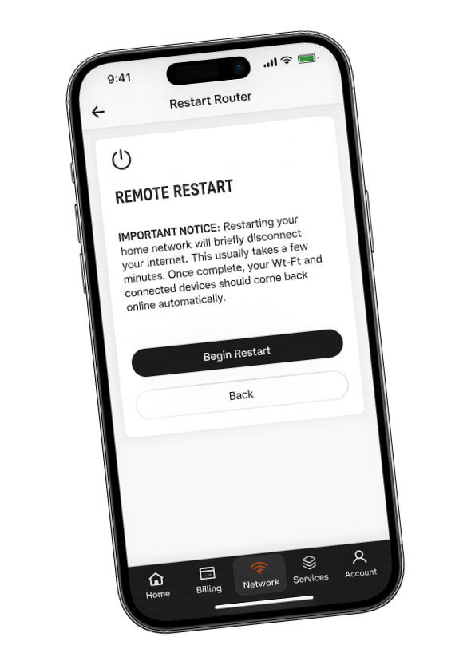
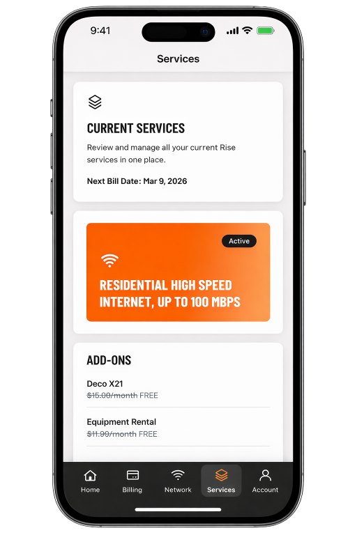
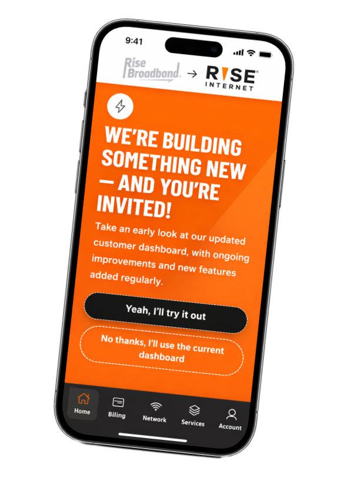
Reduce support dependency and improve customer experience through real-time visibility and control.
Rise Internet: Brand & Product Launch
Led cross-functional execution of the rebrand, partnering with Monigle and internal teams to deliver a cohesive brand experience across every customer touchpoint.
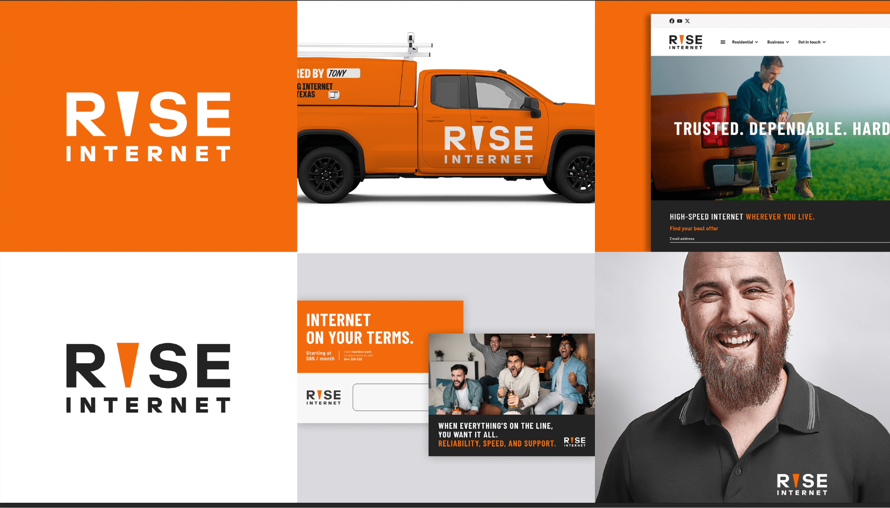
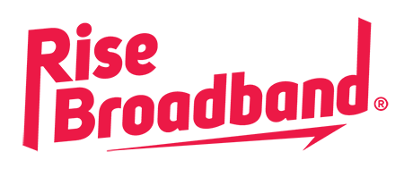
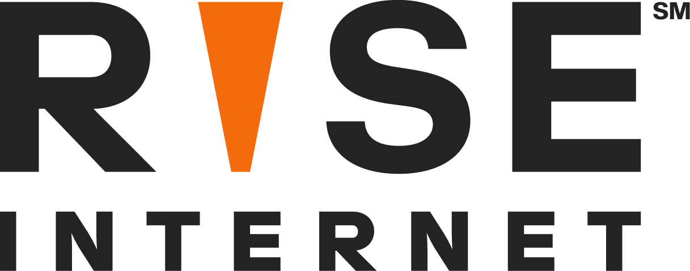
Modernize the brand to better reflect product evolution and support future growth across digital and offline channels.
Rise Internet: RouteThis Certify Partnership
Onboarded and managed the RouteThis Certify partnership to give field technicians AI-driven WiFi heat mapping, dead-zone detection, and mesh recommendations — improving installation quality and the post-install customer experience.
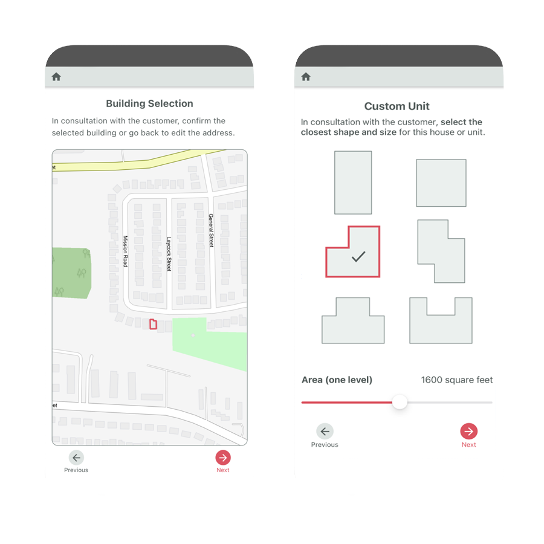
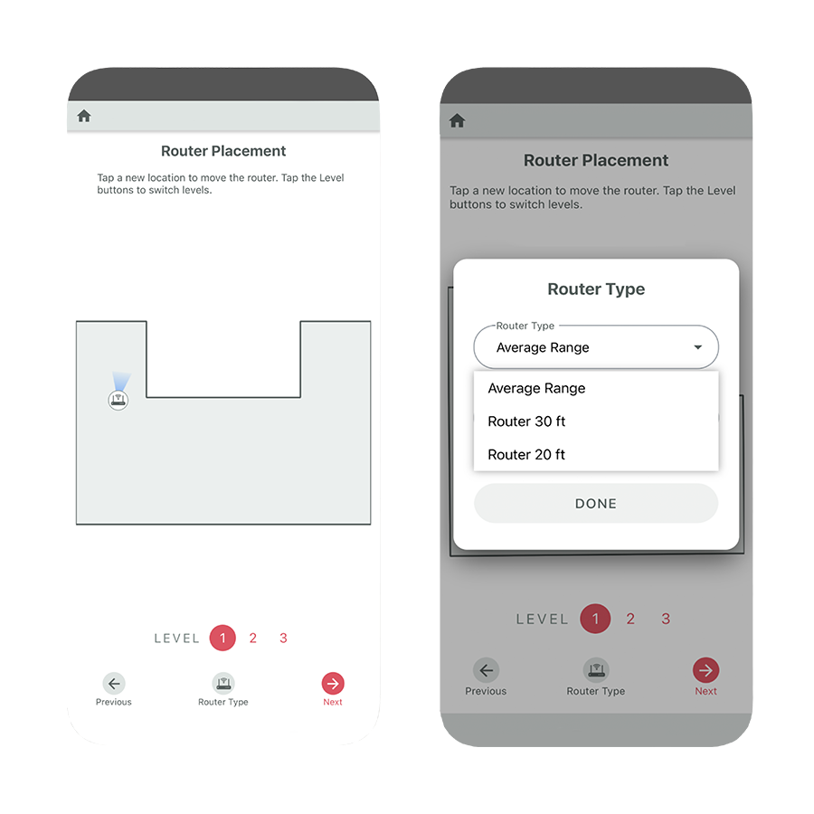
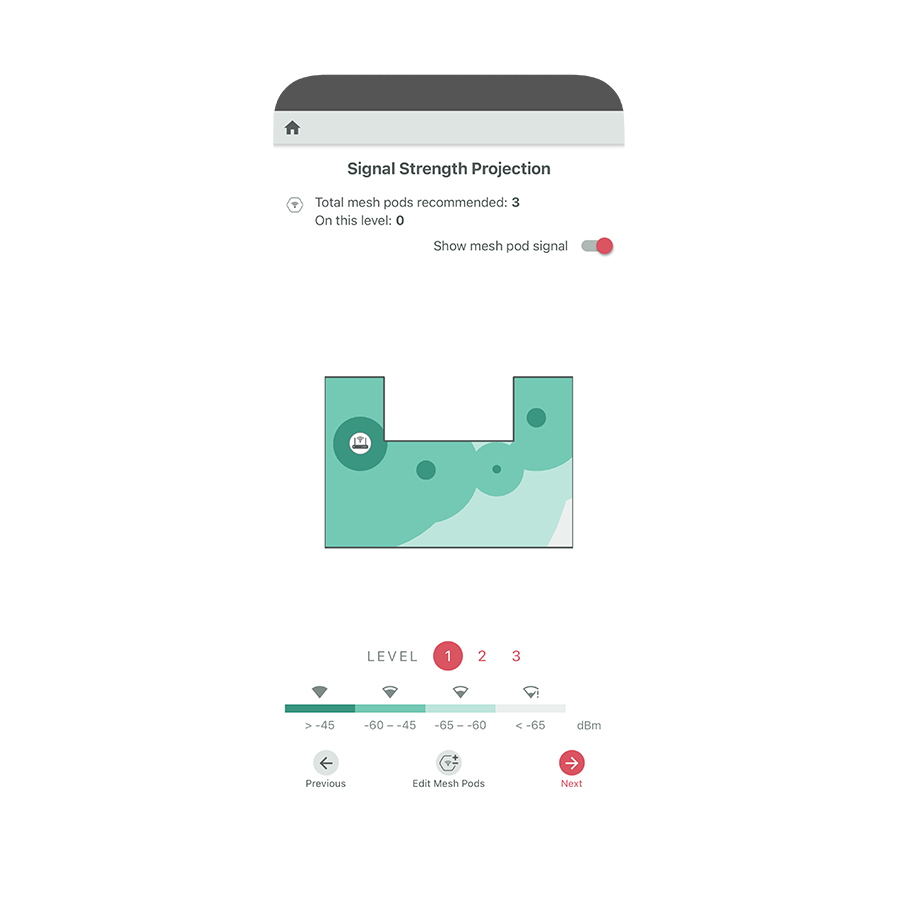
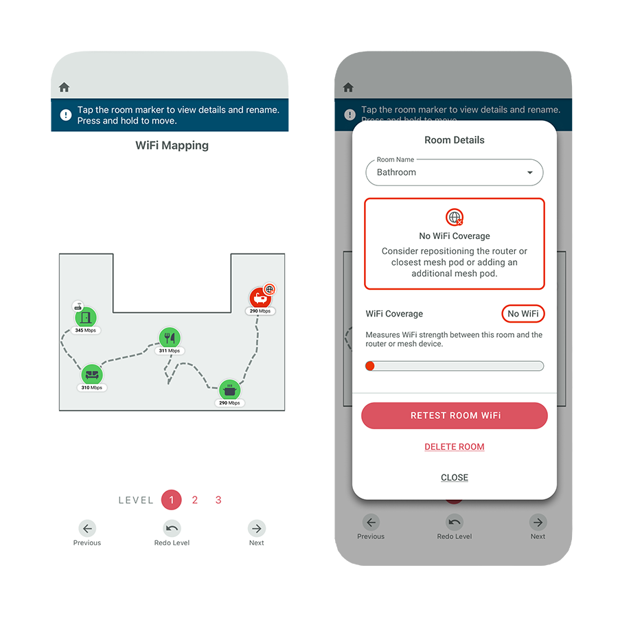
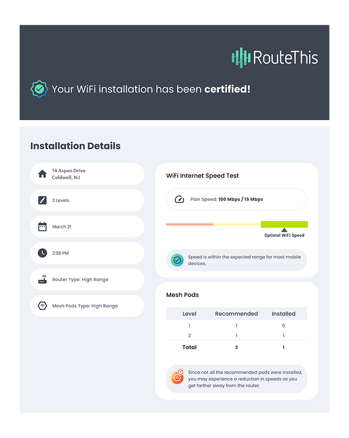
Improve installation quality and deliver a stronger whole-home WiFi experience at the point of install.
Credit.com: Marketing Operations & Technology
Led the Credit.com Martech rebuild — replacing a legacy PHP monolith with a headless CMS architecture that unified marketing and product onto a single frontend. The result: release cycles compressed from months to days, and a scalable foundation that made always-on experimentation possible for the first time.
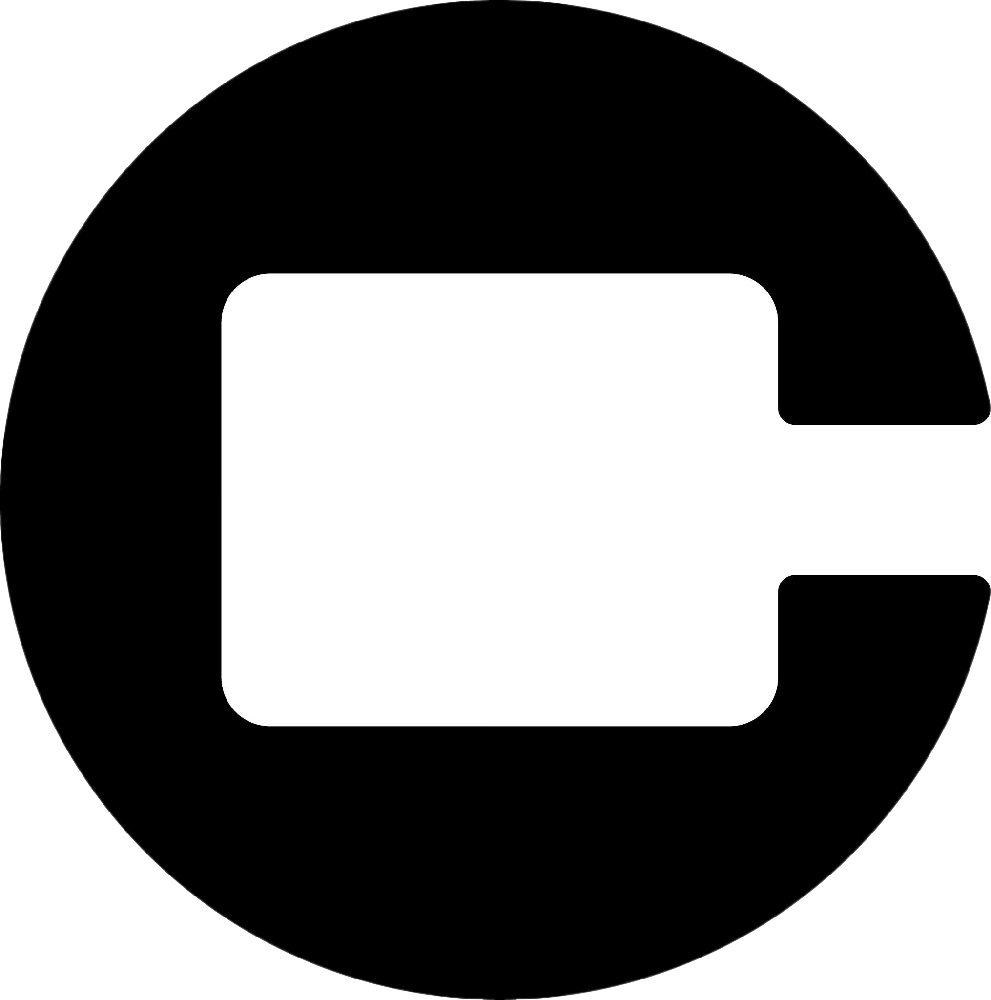
Credit.comMarketing and product teams shipping on disconnected stacks.
One stack powering marketing & customer experience.
Headless CMS delivering a consistent digital experience across the global web and apps, backed by a DAM for asset management.
Marketing & data platform for collecting, analyzing, and visualizing web behavior across the funnel.
Testing, personalization, and automation across the web experience — the experimentation engine for the unified frontend.
Deploys and updates marketing tags without code changes — powering Analytics, Target, and Invoca instrumentation.
Inbound call tracking that ties phone conversions back to marketing ad spend and channel attribution.
Reduce platform fragmentation, accelerate release velocity, and build a scalable Martech foundation for digital growth and experimentation.
Get in touch
Open to growth, product, and digital marketing leadership roles. Always up for a conversation about attribution, CX, experimentation, or how to turn a great strategy into shipped work.